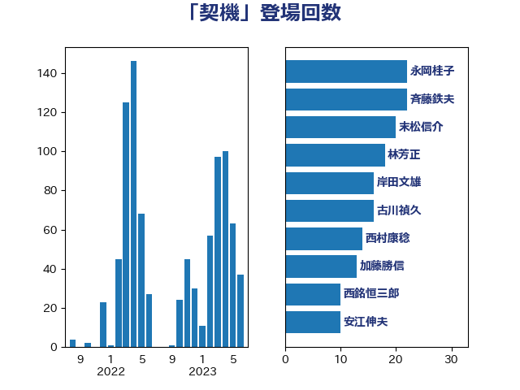

単語「契機」

| 永岡桂子 | 自由民主党 | 22 回 |
| 斉藤鉄夫 | 公明党 | 22 回 |
| 末松信介 | 自由民主党 | 20 回 |
| 林芳正 | 自由民主党 | 18 回 |
| 岸田文雄 | 自由民主党 | 16 回 |
| 古川禎久 | 自由民主党 | 16 回 |
| 西村康稔 | 自由民主党 | 14 回 |
| 加藤勝信 | 自由民主党 | 13 回 |
| 西銘恒三郎 | 自由民主党 | 10 回 |
| 安江伸夫 | 公明党 | 10 回 |
| 鈴木俊一 | 自由民主党 | 8 回 |
| 岡田直樹 | 自由民主党 | 8 回 |
| 音喜多駿 | 日本維新の会 | 7 回 |
| 若宮健嗣 | 自由民主党 | 7 回 |
| 熊谷裕人 | 立憲民主党 | 7 回 |
| 川田龍平 | 立憲民主党 | 7 回 |
| 山口壯 | 自由民主党 | 7 回 |
| 野田聖子 | 自由民主党 | 6 回 |
| 萩生田光一 | 自由民主党 | 6 回 |
| 米山隆一 | 立憲民主党 | 6 回 |
| 漆間譲司 | 日本維新の会 | 6 回 |
| 小倉將信 | 自由民主党 | 6 回 |
| 堀内詔子 | 自由民主党 | 6 回 |
| 吉良州司 | 無所属 | 6 回 |
| 高橋千鶴子 | 日本共産党 | 5 回 |
| 笠井亮 | 日本共産党 | 5 回 |
| 田村智子 | 日本共産党 | 5 回 |
| 田中健 | 国民民主党 | 5 回 |
| 柴田巧 | 日本維新の会 | 5 回 |
| 杉尾秀哉 | 立憲民主党 | 5 回 |
| 早坂敦 | 日本維新の会 | 5 回 |
| 後藤茂之 | 自由民主党 | 5 回 |
| 吉田宣弘 | 公明党 | 5 回 |
| 佐々木さやか | 公明党 | 5 回 |
| 階猛 | 立憲民主党 | 4 回 |
| 長妻昭 | 立憲民主党 | 4 回 |
| 進藤金日子 | 自由民主党 | 4 回 |
| 藤巻健太 | 日本維新の会 | 4 回 |
| 浜田聡 | NHK党 | 4 回 |
| 河野太郎 | 自由民主党 | 4 回 |
| 松本尚 | 自由民主党 | 4 回 |
| 徳永久志 | 無所属 | 4 回 |
| 徳永エリ | 立憲民主党 | 4 回 |
| 小西洋之 | 立憲民主党 | 4 回 |
| 小林鷹之 | 自由民主党 | 4 回 |
| 齋藤健 | 自由民主党 | 3 回 |
| 鬼木誠 | 立憲民主党 | 3 回 |
| 高良鉄美 | 無所属 | 3 回 |
| 青木愛 | 立憲民主党 | 3 回 |
| 鈴木義弘 | 国民民主党 | 3 回 |
| 野田国義 | 立憲民主党 | 3 回 |
| 赤嶺政賢 | 日本共産党 | 3 回 |
| 福重隆浩 | 公明党 | 3 回 |
| 田村まみ | 国民民主党 | 3 回 |
| 河野義博 | 公明党 | 3 回 |
| 河西宏一 | 公明党 | 3 回 |
| 松本剛明 | 自由民主党 | 3 回 |
| 平木大作 | 公明党 | 3 回 |
| 岬麻紀 | 日本維新の会 | 3 回 |
| 岩渕友 | 日本共産党 | 3 回 |
| 山添拓 | 日本共産党 | 3 回 |
| 宮本徹 | 日本共産党 | 3 回 |
| 勝目康 | 自由民主党 | 3 回 |
| 仁比聡平 | 日本共産党 | 3 回 |
| 井上哲士 | 日本共産党 | 3 回 |
| 中川宏昌 | 公明党 | 3 回 |
| おおつき紅葉 | 立憲民主党 | 3 回 |
| 高木かおり | 日本維新の会 | 2 回 |
| 青柳仁士 | 日本維新の会 | 2 回 |
| 阿部弘樹 | 日本維新の会 | 2 回 |
| 長浜博行 | 無所属 | 2 回 |
| 鈴木英敬 | 自由民主党 | 2 回 |
| 金子恭之 | 自由民主党 | 2 回 |
| 金城泰邦 | 公明党 | 2 回 |
| 野村哲郎 | 自由民主党 | 2 回 |
| 足立敏之 | 自由民主党 | 2 回 |
| 赤池誠章 | 自由民主党 | 2 回 |
| 豊田俊郎 | 自由民主党 | 2 回 |
| 角田秀穂 | 公明党 | 2 回 |
| 西村明宏 | 自由民主党 | 2 回 |
| 西岡秀子 | 国民民主党 | 2 回 |
| 自見はなこ | 自由民主党 | 2 回 |
| 紙智子 | 日本共産党 | 2 回 |
| 篠原豪 | 立憲民主党 | 2 回 |
| 福島みずほ | 社会民主党 | 2 回 |
| 石川博崇 | 公明党 | 2 回 |
| 田村貴昭 | 日本共産党 | 2 回 |
| 牧山ひろえ | 立憲民主党 | 2 回 |
| 片山大介 | 日本維新の会 | 2 回 |
| 池畑浩太朗 | 日本維新の会 | 2 回 |
| 江藤拓 | 自由民主党 | 2 回 |
| 柚木道義 | 立憲民主党 | 2 回 |
| 本村伸子 | 日本共産党 | 2 回 |
| 末松義規 | 立憲民主党 | 2 回 |
| 庄子賢一 | 公明党 | 2 回 |
| 川崎ひでと | 自由民主党 | 2 回 |
| 岩谷良平 | 日本維新の会 | 2 回 |
| 山際大志郎 | 自由民主党 | 2 回 |
| 小野泰輔 | 日本維新の会 | 2 回 |
| 宮崎政久 | 自由民主党 | 2 回 |
| 大塚耕平 | 国民民主党 | 2 回 |
| 塩川鉄也 | 日本共産党 | 2 回 |
| 堤かなめ | 立憲民主党 | 2 回 |
| 和田有一朗 | 日本維新の会 | 2 回 |
| 吉良よし子 | 日本共産党 | 2 回 |
| 吉田とも代 | 日本維新の会 | 2 回 |
| 吉川ゆうみ | 自由民主党 | 2 回 |
| 古賀友一郎 | 自由民主党 | 2 回 |
| 勝部賢志 | 立憲民主党 | 2 回 |
| 伊波洋一 | 無所属 | 2 回 |
| 伊佐進一 | 公明党 | 2 回 |
| 中曽根康隆 | 自由民主党 | 2 回 |
| 中島克仁 | 立憲民主党 | 2 回 |
| 上月良祐 | 自由民主党 | 2 回 |
| 三浦靖 | 自由民主党 | 2 回 |
| 三木圭恵 | 日本維新の会 | 2 回 |
| 鰐淵洋子 | 公明党 | 1 回 |
| 高階恵美子 | 自由民主党 | 1 回 |
| 高木陽介 | 公明党 | 1 回 |
| 高木啓 | 自由民主党 | 1 回 |
| 高市早苗 | 自由民主党 | 1 回 |
| 馬場雄基 | 立憲民主党 | 1 回 |
| 青山大人 | 立憲民主党 | 1 回 |
| 阿部司 | 日本維新の会 | 1 回 |
| 長谷川淳二 | 自由民主党 | 1 回 |
| 長峯誠 | 自由民主党 | 1 回 |
| 鎌田さゆり | 立憲民主党 | 1 回 |
| 鈴木庸介 | 立憲民主党 | 1 回 |
| 金子俊平 | 自由民主党 | 1 回 |
| 野中厚 | 自由民主党 | 1 回 |
| 野上浩太郎 | 自由民主党 | 1 回 |
| 里見隆治 | 公明党 | 1 回 |
| 遠藤敬 | 日本維新の会 | 1 回 |
| 輿水恵一 | 公明党 | 1 回 |
| 足立康史 | 日本維新の会 | 1 回 |
| 赤澤亮正 | 自由民主党 | 1 回 |
| 谷田川元 | 立憲民主党 | 1 回 |
| 谷合正明 | 公明党 | 1 回 |
| 西野太亮 | 自由民主党 | 1 回 |
| 西村智奈美 | 立憲民主党 | 1 回 |
| 藤田文武 | 日本維新の会 | 1 回 |
| 荒井優 | 立憲民主党 | 1 回 |
| 舟山康江 | 国民民主党 | 1 回 |
| 羽田次郎 | 立憲民主党 | 1 回 |
| 簗和生 | 自由民主党 | 1 回 |
| 篠原孝 | 立憲民主党 | 1 回 |
| 竹詰仁 | 国民民主党 | 1 回 |
| 秋葉賢也 | 自由民主党 | 1 回 |
| 神谷宗幣 | 参政党 | 1 回 |
| 礒崎哲史 | 国民民主党 | 1 回 |
| 石井章 | 日本維新の会 | 1 回 |
| 石井拓 | 自由民主党 | 1 回 |
| 石井啓一 | 公明党 | 1 回 |
| 玉木雄一郎 | 国民民主党 | 1 回 |
| 牧義夫 | 立憲民主党 | 1 回 |
| 牧島かれん | 自由民主党 | 1 回 |
| 渡辺周 | 立憲民主党 | 1 回 |
| 渡辺創 | 立憲民主党 | 1 回 |
| 清水貴之 | 日本維新の会 | 1 回 |
| 浜野喜史 | 国民民主党 | 1 回 |
| 浜田靖一 | 自由民主党 | 1 回 |
| 浜地雅一 | 公明党 | 1 回 |
| 浅田均 | 日本維新の会 | 1 回 |
| 泉田裕彦 | 自由民主党 | 1 回 |
| 池下卓 | 日本維新の会 | 1 回 |
| 水野素子 | 立憲民主党 | 1 回 |
| 櫻井周 | 立憲民主党 | 1 回 |
| 横山信一 | 公明党 | 1 回 |
| 森山浩行 | 立憲民主党 | 1 回 |
| 梅村みずほ | 日本維新の会 | 1 回 |
| 柳本顕 | 自由民主党 | 1 回 |
| 柳ヶ瀬裕文 | 日本維新の会 | 1 回 |
| 松原仁 | 立憲民主党 | 1 回 |
| 村田享子 | 立憲民主党 | 1 回 |
| 杉田水脈 | 自由民主党 | 1 回 |
| 本田太郎 | 自由民主党 | 1 回 |
| 木原稔 | 自由民主党 | 1 回 |
| 朝日健太郎 | 自由民主党 | 1 回 |
| 早稲田ゆき | 立憲民主党 | 1 回 |
| 打越さく良 | 立憲民主党 | 1 回 |
| 平林晃 | 公明党 | 1 回 |
| 平山佐知子 | 無所属 | 1 回 |
| 島村大 | 自由民主党 | 1 回 |
| 岸真紀子 | 立憲民主党 | 1 回 |
| 岡本三成 | 公明党 | 1 回 |
| 山谷えり子 | 自由民主党 | 1 回 |
| 山田美樹 | 自由民主党 | 1 回 |
| 山本香苗 | 公明党 | 1 回 |
| 山崎正恭 | 公明党 | 1 回 |
| 山口那津男 | 公明党 | 1 回 |
| 尾身朝子 | 自由民主党 | 1 回 |
| 小沢雅仁 | 立憲民主党 | 1 回 |
| 小宮山泰子 | 立憲民主党 | 1 回 |
| 寺田稔 | 自由民主党 | 1 回 |
| 宮路拓馬 | 自由民主党 | 1 回 |
| 宮本岳志 | 日本共産党 | 1 回 |
| 宮崎雅夫 | 自由民主党 | 1 回 |
| 宮崎勝 | 公明党 | 1 回 |
| 宮下一郎 | 自由民主党 | 1 回 |
| 室井邦彦 | 日本維新の会 | 1 回 |
| 太田房江 | 自由民主党 | 1 回 |
| 天畠大輔 | れいわ新選組 | 1 回 |
| 大野敬太郎 | 自由民主党 | 1 回 |
| 大石あきこ | れいわ新選組 | 1 回 |
| 大島敦 | 立憲民主党 | 1 回 |
| 大家敏志 | 自由民主党 | 1 回 |
| 大口善徳 | 公明党 | 1 回 |
| 塩崎彰久 | 自由民主党 | 1 回 |
| 堂込麻紀子 | 無所属 | 1 回 |
| 城内実 | 自由民主党 | 1 回 |
| 城井崇 | 立憲民主党 | 1 回 |
| 坂本祐之輔 | 立憲民主党 | 1 回 |
| 國重徹 | 公明党 | 1 回 |
| 和田義明 | 自由民主党 | 1 回 |
| 吉田統彦 | 立憲民主党 | 1 回 |
| 吉田はるみ | 立憲民主党 | 1 回 |
| 吉川沙織 | 立憲民主党 | 1 回 |
| 吉井章 | 自由民主党 | 1 回 |
| 古川直季 | 自由民主党 | 1 回 |
| 古川俊治 | 自由民主党 | 1 回 |
| 北村経夫 | 自由民主党 | 1 回 |
| 前川清成 | 日本維新の会 | 1 回 |
| 倉林明子 | 日本共産党 | 1 回 |
| 伊藤渉 | 公明党 | 1 回 |
| 伊藤岳 | 日本共産党 | 1 回 |
| 仁木博文 | 無所属 | 1 回 |
| 井林辰憲 | 自由民主党 | 1 回 |
| 井出庸生 | 自由民主党 | 1 回 |
| 五十嵐清 | 自由民主党 | 1 回 |
| 中野洋昌 | 公明党 | 1 回 |
| 中西祐介 | 自由民主党 | 1 回 |
| 中根一幸 | 自由民主党 | 1 回 |
| 中川正春 | 立憲民主党 | 1 回 |
| 下野六太 | 公明党 | 1 回 |
| 上野通子 | 自由民主党 | 1 回 |
| 上田清司 | 国民民主党 | 1 回 |
| 上川陽子 | 自由民主党 | 1 回 |
| 三浦信祐 | 公明党 | 1 回 |
| 三上えり | 立憲民主党 | 1 回 |
| こやり隆史 | 自由民主党 | 1 回 |